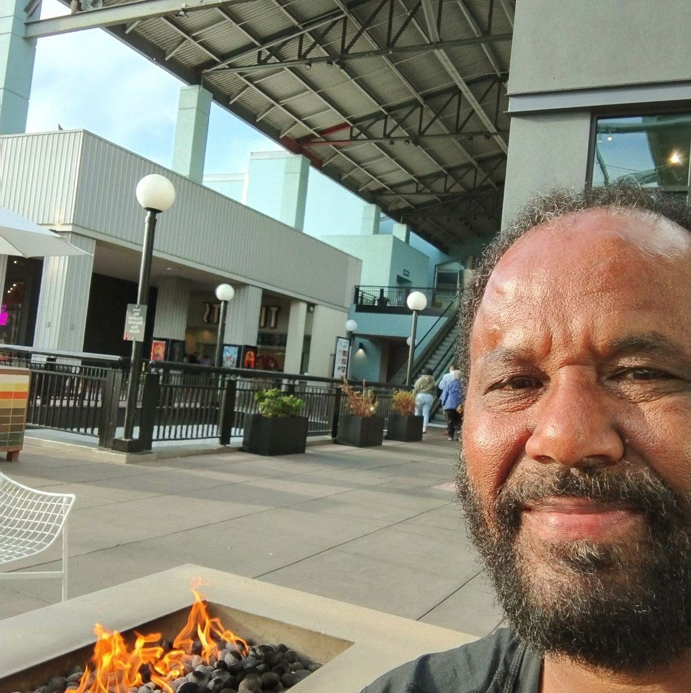
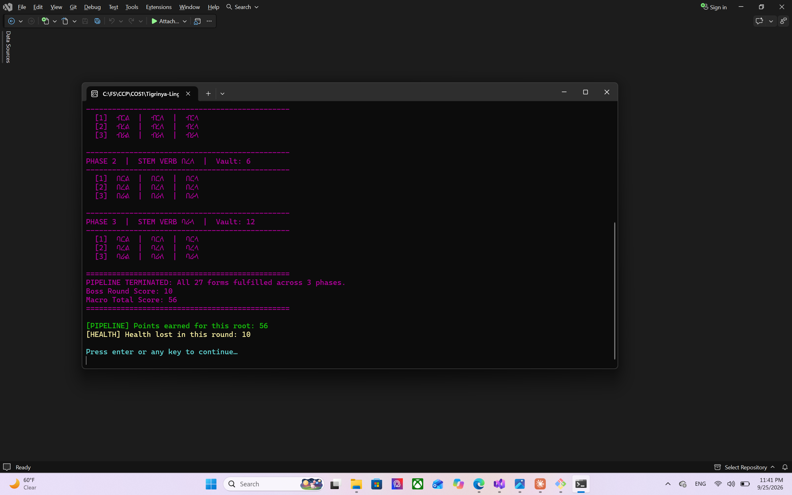

Languages
C++, HTML, CSS
Developer Portfolio
Studying Computer Science at Full Sail University with an upcoming concentration in Artificial Intelligence.

About Me
Originally from Oakland, California, I am building a rigorous foundation in C++ systems programming, modular software architecture, and version control workflows while studying Computer Science at Full Sail University.
C++, HTML, CSS
Visual Studio, Git, GitHub, Obsidian
C++ systems programming, memory management, and algorithmic design
Featured Work
Showcasing high-performance C++ console systems featuring robust memory management and advanced linguistic game mechanics.

C++ Console Application
A C++ console application that serves as both a strategic game and a tool to learn Tigrinya verbs from scratch. Players register bedrock root verbs via 3-digit shorthand, allowing the engine to dynamically generate 27 conjugation forms from Fidel family data.
new/delete/nullptr).Overcame technical hurdles including cross-platform UTF-8 code page encoding, non-integer input crash prevention, and dynamic memory validation loops.

C++17 Console Application & Font Toolchain
A from-scratch writing system for the Geez-Sabaic and Tigrinya tradition, generated from 0s and 1s and written with only the digits 0 to 9. Every primary fidel is one byte (3 bits for the level, 1 bit for the side, 4 bits for the value), and the program generates its SVG shape, registers its sound, and builds a font from the result. Work in progress: 30 consonant sounds are registered, vowels and special signs are next.
FidelTable indexed by the fidel's own code, so jumping between levels keeps the same side and value in one step. Chosen over std::list and a graph after comparing the trade-offs and getting my instructor's feedback.Designing a data structure around the problem instead of the habit: levels are only appended and codes never change, so a contiguous table beats a linked list. I also practiced bit-level encoding, file I/O and stream error handling, keeping data and rules in one source of truth with automated checks, and structuring a Visual Studio and CMake project that builds cleanly on several compilers.
Contact
Reach out for project collaboration and professional inquiries.